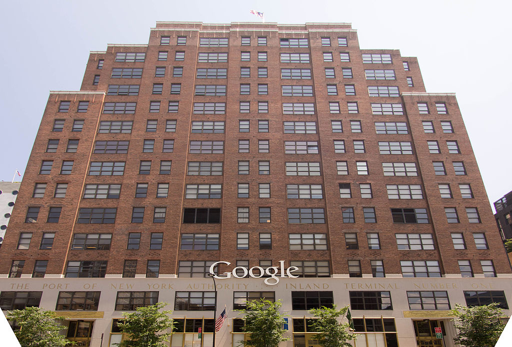

Growth
Google began in January 1996 as a research project by Larry Page and Sergey Brin when they were both PhD students at Stanford University in Stanford, California. The project initially involved an unofficial "third founder", Scott Hassan, the original lead programmer who wrote much of the code for the original Google Search engine, but he left before Google was officially founded as a company;[19][20] Hassan went on to pursue a career in robotics and founded the company Willow Garage in 2006.[21][22]

While conventional search engines ranked results by counting how many times the search terms appeared on the page, they theorized about a better system that analyzed the relationships among websites.[23] They called this algorithm PageRank; it determined a website's relevance by the number of pages, and the importance of those pages that linked back to the original site.[24][25] Page told his ideas to Hassan, who began writing the code to implement Page's ideas.[19]
Page and Brin originally nicknamed the new search engine "BackRub", because the system checked backlinks to estimate the importance of a site.[26][27][28] Hassan as well as Alan Steremberg were cited by Page and Brin as being critical to the development of Google. Rajeev Motwani and Terry Winograd later co-authored with Page and Brin the first paper about the project, describing PageRank and the initial prototype of the Google search engine, published in 1998. Héctor García-Molina and Jeff Ullman were also cited as contributors to the project.[29] PageRank was influenced by a similar page-ranking and site-scoring algorithm earlier used for RankDex, developed by Robin Li in 1996, with Larry Page's PageRank patent including a citation to Li's earlier RankDex patent; Li later went on to create the Chinese search engine Baidu.[30][31][32]
Eventually, they changed the name to Google; the name of the search engine originated from a misspelling of the word "googol",[33][34] the number 1 followed by 100 zeros, which was picked to signify that the search engine was intended to provide large quantities of information.[35]
The domain name for Google was registered on September 15, 1997,[37] and the company was incorporated on September 4, 1998. It was based in the garage of a friend (Susan Wojcicki[18]) in Menlo Park, California. Craig Silverstein, a fellow PhD student at Stanford, was hired as the first employee.[18][38][39]
Google was initially funded by an August 1998 contribution of $100,000 from Andy Bechtolsheim, co-founder of Sun Microsystems; the money was given before Google was incorporated.[40] Google received money from three other angel investors in 1998: Amazon.com founder Jeff Bezos, Stanford University computer science professor David Cheriton, and entrepreneur Ram Shriram.[41] Between these initial investors, friends, and family Google raised around 1 million dollars, which is what allowed them to open up their original shop in Menlo Park, California [42]
After some additional, small investments through the end of 1998 to early 1999,[41] a new $25 million round of funding was announced on June 7, 1999,[43] with major investors including the venture capital firms Kleiner Perkins and Sequoia Capital.[40]
By late 2006, Google established a new headquarters for its AdWords division in Ann Arbor, Michigan. In November 2006, Google opened offices on Carnegie Mellon's campus in Pittsburgh, focusing on shopping-related advertisement coding and smartphone applications and programs. Other office locations in the U.S. include Atlanta, Georgia; Austin, Texas; Boulder, Colorado; Cambridge, Massachusetts; San Francisco, California; Seattle, Washington; Kirkland, Washington; Birmingham, Michigan; Reston, Virginia, and Washington, D.C.
It also has product research and development operations in cities around the world, namely Sydney (birthplace location of Google Maps) and London (part of Android development). In November 2013, Google announced plans for a new London headquarter, a 1 million square foot office able to accommodate 4,500 employees. Recognized as one of the biggest ever commercial property acquisitions at the time of the deal's announcement in January, Google submitted plans for the new headquarter to the Camden Council in June 2017. In May 2015, Google announced its intention to create its own campus in Hyderabad, India. The new campus, reported to be the company's largest outside the United States, will accommodate 13,000 employees.
